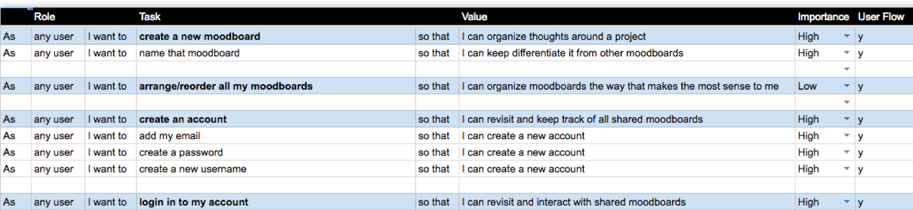
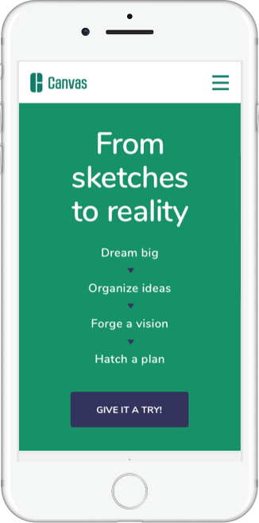

Canvas
Desktop web app • 2018
Makers and project managers are passionate about the products they create. But the road to get there is a grind. Without the right tools, that process is a nightmare.
Roles
UX Researcher • Content Strategist • Product Designer • Identity Designer • Visual Designer
Overview
Canvas is a full-featured toolset that helps creative teams go from brainstorm to action plan to market-ready deliverable. Now, teams can focus on the craft, not the stress.
Problem
Most creative teams use seperate cloud storage and organization tools to brainstorm, iterate, collaborate, strategize and plan. But makers are missing a platform that puts all those needs under one roof, and lack a toolkit that makes moving between each stage easy while keeping a premium on focus and creativity.
Solution
Canvas helps teams go from sketch to reality with tools that make managing, sharing and collaborating on projects a near-effortless process. Canvas applies structure to ideas, and helps turn goals into a cohesive vision. To help makers finish on time and on target, Canvas offers roadmap tools, punch lists and user tagging.
Discovery and research
Cloud storage and organization suites often fail to meet core needs for creative teams. Through user research, I identified missing features that could set a new platform apart.

Competitve analysis
To better understand the current cloud storage and organization marketplace, I focused on three products — Milanote, InVision Boards and Pinterest — that have medium-to-high use among creatives. I identified each company’s core brand message, and analyzed their respective strengths, weaknesses, opportunities and threats. In the end, I hypothesized that opportunities exist in a tool that helps makers organize ideas in a visual way (like Pinterest and InVision Boards) inside of a free-form moodboard environment (like Milanote) with a productivity overlay (like Hatch journals) all while keeping centralized digital storage at its core.
User research
To determine what products and features makers use most, I created a user survey focused on creatives and creative team managers. Some key findings:
Cloud-storage use and file-sharing tools
Project management or collaboration tools
User personas
The spectrum of human needs seemed to gravitate toward three core user types, which I used to create user personas who represent Canvas’ target audience.
Bobby T, a designer, works on larger teams to develop high-impact experiences. Cloud-based editing is important, as is a tool that allows for free-form associations and drawing/creating annotations.
Chin W, a product manager, works daily with creatives and manages goals, assets and milestones. She has a strong desire for seamless collaboration and efficiency.
Jean G, a freelance artist, wants plenty of canvas to think, needs a tool to scope work and would prefer to use the same tool to share work with clients for feedback.

Information Architecture
Flexible, dynamic moodboards could help bring teams together under a shared vision. Turning that idea into a market-changing product requires several key user features.
User stories and flows
To inform a “global” feature set, I created user stories to cover the overlap between all three user personas (designer, project manager, maker). These user stories provided a blueprint to create user flows that addressed these major user needs:
- Flow 1: Access moodboards
- Flow 2: Create account / log in
- Flow 3: Add to moodboard
- Flow 4: Edit moodboard
- Flow 5: Connect/share moodboard

Content strategy and wireframes
I built a site map to inform initial wireframes for a dynamic moodboarding tool as well as a product marketing site, and created a spreadsheet-based content strategy to map out the site’s core features. These tools helped me keep an eye on the big picture as I sketched out eight key pages: landing page, pricing, sign in, sign up, project dashboard, community dashboard and moodboard editor. With sketches in place, I turned to low-fidelity wireframes to apply more precision to site content.

Lo-fi prototype and user testing
With site wireframes in hand, I created a simple and clickable prototype to gain initial feedback and to test assumptions. I created a testing script and found three willing users to try to break it.
Early results were promising. In general, testers understood how to navigate pages. They were easily able to articulate the site’s purpose as well as a core understanding of how they might use this product. One trouble spot — a pair of onboarding screens — surfaced in testing, and it became clear that I needed to rethink some basic language and prompts on those screens.
Visual Design
Brand vision and product intention proved to be key in guiding unique and high-impact design decisions. Mind maps and key questions led to a holistic look and feel.
Branding: Discovery
With core wireframes modeled and early user testing complete, I switched gears to make some key product design decisions — high-impact visual details (typography, color, iconography, brand logo) and marketing direction (product name, brand mission and taglines).
I listed out key brand details, created a mind-map, addressed key questions and revisited companies from my competitive analysis to document their signature design choices. I put together a brand-design moodboard to work through inspirations in color, iconography, logo typography and site typography.

Finding a name
In order to name this platform, I thought back to user research when an opportunity for a product-defining feature first emerged. This new tool would need to provide a large and seemingly infinite canvas to allow makers to attach as much thinking — annotations, imagery, links and multimedia — to working ideas as possible. They would need to funnel these ideas toward actions, timelines and to-do lists to move toward deliverables, and they could use plenty of open space to do so. After trying several ideas, I decided “Canvas” best captured all of those essential qualities.
Refinement
Having a brand name allowed me to move into logo exploration. I started by sketching several “C”s from “Canvas”, envisioning these “C”s as a possible logomark. One set of “C”s trended towards capturing the moodboard-like aspect of Canvas. Another set leaned into the overlap of ideas that come from ideation. Initial sketches led to more refined sketches. I sought brand typeface options (RBNo2.1 b Medium and Outage) that had power and high contrast to get to a working render. I also started to explore site typography (Nunito and Lora), and created a working style guide to pull all of the brand's design and style guidelines together.

Prototype and Testing
Once rubber met road, the real fine-tuning began. Applying earlier designs to wireframes exposed new weaknesses and user testing help surface potholes.

Hi-fidelity prototypes
With key design decisions roughed in, I revisited wireframes to add polish and apply these decisions. And then a not-so-surprising thing happened — a few design weaknesses were exposed. In the original logomark, multiple stroke weights led to a visual imbalance. So I adjusted to a single weight. I also discovered the mono-stroked logomark did not read well at small sizes. So I created a small-logomark alternate with a solid fill color instead of an outline. I also polished a few initial color choices, and updated the style guide. When I was finished, I had a full set of hi-fidelity prototypes for desktop as well as mobile prototypes with corresponding screens. I even created a preference test for a few of the screens, including two for desktop (1 & 2) and one for mobile.
User testing
With hi-fidelity desktop and mobile designs ready, I turned the desktop designs into a clickable prototype to be tested, and created another testing script. I chose a tester from the wireframe testing group as well as two new testers. Once again, testing yielded overall positive results. But, more importantly, it also exposed opportunities for more tightening:
- Adding a sticky nav to the landing page would keep core site options top-of-mind
- Overhauling a tutorial prompt — from this to this — could reduce cognitive load
- Adding a cursor tooltip on the board creation example screen could lower confusion
- Renaming/reordering sort options on the dashboard screen could lower confusion
After testing, I worked up a full summary and went to work addressing these issues.



Conclusion
I’m proud of the rigor I poured into Canvas,and the resulting work. Full-featured, market-ready products are rarely produced by a single person. However, this months-long process helped me better understand just how critical each step is in developing a successful product. I gained a new and deep appreciation for the immediate insights that come from rounds of user testing. This project taught me that a methodical, well-worn process can lead to well-designed products that provide high value for users.